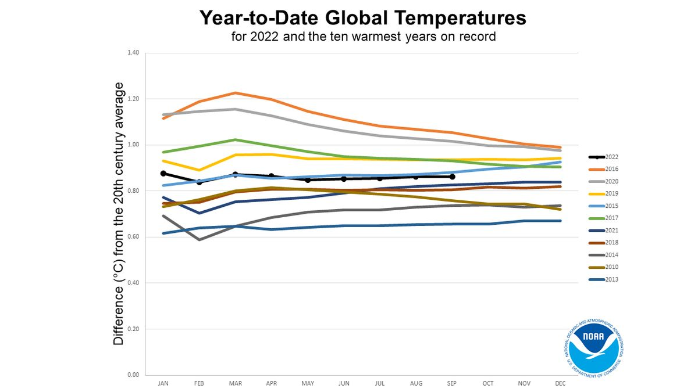

Introduction to Global Warming
Global warming is a long-term increase in Earth's average surface temperature due to human activities, primarily the release of greenhouse gases. Global warming is the phenomenon of a gradual increase in the temperature near the earth’s surface. This phenomenon has been observed over the past one or two centuries. This change has disturbed the climatic pattern of the earth. However, the concept of global warming is quite controversial, but the scientists have provided relevant data in support of the fact that the temperature of the earth is rising constantly. There are several causes of global warming, which have a negative effect on humans, plants, and animals. These causes may be natural or might be the outcome of human activities. In order to curb the issues, it is very important to understand the negative impacts of global warming.
Causes of Global Warming
The main causes of global warming include the burning of fossil fuels, deforestation, and industrial processes.
Radiative forcing
Radiative forcing refers to the change in energy balance in the atmosphere caused by factors such as greenhouse gas emissions, solar radiation variations, and volcanic activity.
n light of the discussion above of the greenhouse effect, it is apparent that the temperature of Earth’s surface and lower atmosphere may be modified in three ways:
(1) through a net increase in the solar radiation entering at the top of Earth’s atmosphere
(2) through a change in the fraction of the radiation reaching the surface
(3) through a change in the concentration of greenhouse gases in the atmosphere
In each case the changes can be thought of in terms of “radiative forcing.” As defined by the IPCC, radiative forcing is a measure of the influence a given climatic factor has on the amount of downward-directed radiant energy impinging upon Earth’s surface. Climatic factors are divided between those caused primarily by human activity (such as greenhouse gas emissions and aerosol emissions) and those caused by natural forces (such as solar irradiance); then, for each factor, so-called forcing values are calculated for the time period between 1750 and the present day. “Positive forcing” is exerted by climatic factors that contribute to the warming of Earth’s surface, whereas “negative forcing” is exerted by factors that cool Earth’s surface.
On average, about 342 watts of solar radiation strike each square metre of Earth’s surface, and this quantity can in turn be related to a rise or fall in Earth’s surface temperature. Temperatures at the surface may also rise or fall through a change in the distribution of terrestrial radiation (that is, radiation emitted by Earth) within the atmosphere. In some cases, radiative forcing has a natural origin, such as during explosive eruptions from volcanoes where vented gases and ash block some portion of solar radiation from the surface. In other cases, radiative forcing has an anthropogenic, or exclusively human, origin. For example, anthropogenic increases in carbon dioxide, methane, nitrous oxide, halogenated gases, and other factors are estimated to account for 2.72 watts per square metre of positive radiative forcing, relative to estimated 1750 benchmark values. When all values of positive and negative radiative forcing are taken together and all interactions between climatic factors are accounted for, the total net increase in surface radiation due to human activities since the beginning of the Industrial Revolution is 1.6 watts per square metre.
The influences of human activity on climate
Human activity has influenced global surface temperatures by changing the radiative balance governing the Earth on various timescales and at varying spatial scales. The most profound and well-known anthropogenic influence is the elevation of concentrations of greenhouse gases in the atmosphere. Humans also influence climate by changing the concentrations of aerosols and ozone and by modifying the land cover of Earth’s surface.
The greenhouse gases
Greenhouse gas, any gas that has the property of absorbing infrared radiation (net heat energy) emitted from Earth’s surface and reradiating it back to Earth’s surface, thus contributing to the greenhouse effect. Carbon dioxide, methane, and water vapour are the most important greenhouse gases. (To a lesser extent, surface-level ozone, nitrous oxides, and fluorinated gases also trap infrared radiation.) Greenhouse gases have a profound effect on the energy budget of the Earth system despite making up only a fraction of all atmospheric gases. Concentrations of greenhouse gases have varied substantially during Earth’s history, and these variations have driven substantial climate changes at a wide range of timescales. In general, greenhouse gas concentrations have been particularly high during warm periods and low during cold periods.
A number of processes influence greenhouse gas concentrations. Some, such as tectonic activities, operate at timescales of millions of years, whereas others, such as vegetation, soil, wetland, and ocean sources and sinks, operate at timescales of hundreds to thousands of years. Human activities—especially fossil-fuel combustion since the Industrial Revolution—are responsible for steady increases in atmospheric concentrations of various greenhouse gases, especially carbon dioxide, methane, ozone, and chlorofluorocarbons (CFCs).
The effect of each greenhouse gas on Earth’s climate depends on its chemical nature and its relative concentration in the atmosphere. Some gases have a high capacity for absorbing infrared radiation or occur in significant quantities, whereas others have considerably lower capacities for absorption or occur only in trace amounts. Radiative forcing, as defined by the Intergovernmental Panel on Climate Change (IPCC), is a measure of the influence a given greenhouse gas or other climatic factor (such as solar irradiance or albedo) has on the amount of radiant energy impinging upon Earth’s surface.
Major Greenhouse Gases
Water Vapour
Water vapour is the most potent greenhouse gas in Earth’s atmosphere, but its behaviour is fundamentally different from that of the other greenhouse gases. The primary role of water vapour is not as a direct agent of radiative forcing but rather as a climate feedback—that is, as a response within the climate system that influences the system’s continued activity. This distinction arises because the amount of water vapour in the atmosphere cannot, in general, be directly modified by human behaviour but is instead set by air temperatures. The warmer the surface, the greater the evaporation rate of water from the surface. As a result, increased evaporation leads to a greater concentration of water vapour in the lower atmosphere capable of absorbing infrared radiation and emitting it back to the surface.
Carbon Dioxide
Of the greenhouse gases, carbon dioxide (CO2) is the most significant. Natural sources of atmospheric CO2 include outgassing from volcanoes, the combustion and natural decay of organic matter, and respiration by aerobic (oxygen-using) organisms. These sources are balanced, on average, by a set of physical, chemical, or biological processes, called “sinks,” that tend to remove CO2 from the atmosphere. Significant natural sinks include terrestrial vegetation, which takes up CO2 during the process of photosynthesis.
A number of oceanic processes also act as carbon sinks. One such process, called the “solubility pump,” involves the descent of surface seawater containing dissolved CO2. Another process, the “biological pump,” involves the uptake of dissolved CO2 by marine vegetation and phytoplankton (small free-floating photosynthetic organisms) living in the upper ocean or by other marine organisms that use CO2 to build skeletons and other structures made of calcium carbonate (CaCO3). As these organisms expire and fall to the ocean floor, the carbon they contain is transported downward and eventually buried at depth. A long-term balance between these natural sources and sinks leads to the background, or natural, level of CO2 in the atmosphere.
In contrast, human activities increase atmospheric CO2 levels primarily through the burning of fossil fuels (principally oil and coal, and secondarily natural gas, for use in transportation, heating, and electricity production) and through the production of cement. Other anthropogenic sources include the burning of forests and the clearing of land. Anthropogenic emissions currently account for the annual release of about 7 gigatons (7 billion tons) of carbon into the atmosphere. Anthropogenic emissions are equal to approximately 3 percent of the total emissions of CO2 by natural sources, and this amplified carbon load from human activities far exceeds the offsetting capacity of natural sinks (by perhaps as much as 2–3 gigatons per year).
CO2 has consequently accumulated in the atmosphere at an average rate of 1.4 parts per million (ppm) by volume per year between 1959 and 2006 and roughly 2.0 ppm per year between 2006 and 2018. Overall, this rate of accumulation has been linear (that is, uniform over time). However, certain current sinks, such as the oceans, could become sources in the future. This may lead to a situation in which the concentration of atmospheric CO2 builds at an exponential rate (that is, at a rate of increase that is also increasing over time).
The natural background level of carbon dioxide varies on timescales of millions of years due to slow changes in outgassing through volcanic activity. For example, roughly 100 million years ago, during the Cretaceous Period, CO2 concentrations appear to have been several times higher than today (perhaps close to 2,000 ppm). Over the past 700,000 years, CO2 concentrations have varied over a far smaller range (between roughly 180 and 300 ppm) in association with the same Earth orbital effects linked to the coming and going of the ice ages of the Pleistocene epoch. By the early 21st century, CO2 levels reached 384 ppm, which is approximately 37 percent above the natural background level of roughly 280 ppm that existed at the beginning of the Industrial Revolution. Atmospheric CO2 levels continued to increase, and by 2018 they had reached 410 ppm. According to ice core measurements, such levels are believed to be the highest in at least 800,000 years and, according to other lines of evidence, may be the highest in at least 5,000,000 years.
Radiative forcing caused by carbon dioxide varies in an approximately logarithmic fashion with the concentration of that gas in the atmosphere. The logarithmic relationship occurs as the result of a saturation effect wherein it becomes increasingly difficult, as CO2 concentrations increase, for additional CO2 molecules to further influence the “infrared window” (a certain narrow band of wavelengths in the infrared region that is not absorbed by atmospheric gases). The logarithmic relationship predicts that the surface warming potential will rise by roughly the same amount for each doubling of CO2 concentration. At current rates of fossil-fuel use, a doubling of CO2 concentrations over preindustrial levels is expected to take place by the middle of the 21st century (when CO2 concentrations are projected to reach 560 ppm). A doubling of CO2 concentrations would represent an increase of roughly 4 watts per square metre of radiative forcing. Given typical estimates of “climate sensitivity” in the absence of any offsetting factors, this energy increase would lead to a warming of 2 to 5 °C (3.6 to 9 °F) over preindustrial times. The total radiative forcing by anthropogenic CO2 emissions since the beginning of the industrial age is approximately 1.66 watts per square metre.
Methane
Methane (CH4) is the second most important greenhouse gas. CH4 is more potent than CO2 because the radiative forcing produced per molecule is greater. In addition, the infrared window is less saturated in the range of wavelengths of radiation absorbed by CH4, so more molecules may fill in the region. However, CH4 exists in far lower concentrations than CO2 in the atmosphere, and its concentrations by volume in the atmosphere are generally measured in parts per billion (ppb) rather than ppm. CH4 also has a considerably shorter residence time in the atmosphere than CO2 (the residence time for CH4 is roughly 10 years, compared with hundreds of years for CO2).
Natural sources of methane include tropical and northern wetlands, methane-oxidizing bacteria that feed on organic material consumed by termites, volcanoes, seepage vents of the seafloor in regions rich with organic sediment, and methane hydrates trapped along the continental shelves of the oceans and in polar permafrost. The primary natural sink for methane is the atmosphere itself, as methane reacts readily with the hydroxyl radical (OH−) within the troposphere to form CO2 and water vapour (H2O). When CH4 reaches the stratosphere, it is destroyed. Another natural sink is soil, where methane is oxidized by bacteria.
As with CO2, human activity is increasing the CH4 concentration faster than it can be offset by natural sinks. Anthropogenic sources currently account for approximately 70 percent of total annual emissions, leading to substantial increases in concentration over time. The major anthropogenic sources of atmospheric CH4 are rice cultivation, livestock farming, the burning of coal and natural gas, the combustion of biomass, and the decomposition of organic matter in landfills. Future trends are particularly difficult to anticipate. This is in part due to an incomplete understanding of the climate feedbacks associated with CH4 emissions. In addition, as human populations grow, it is difficult to predict how possible changes in livestock raising, rice cultivation, and energy use will influence CH4 emissions.
It is believed that a sudden increase in the concentration of methane in the atmosphere was responsible for a warming event that raised average global temperatures by 4–8 °C (7.2–14.4 °F) over a few thousand years during the so-called Paleocene-Eocene Thermal Maximum (PETM). This episode took place roughly 55 million years ago, and the rise in CH4 appears to have been related to a massive volcanic eruption that interacted with methane-containing flood deposits. As a result, large amounts of gaseous CH4 were injected into the atmosphere. It is difficult to know precisely how high these concentrations were or how long they persisted. At very high concentrations, residence times of CH4 in the atmosphere can become much greater than the nominal 10-year residence time that applies today. Nevertheless, it is likely that these concentrations reached several ppm during the PETM.
Methane concentrations also varied over a smaller range (between roughly 350 and 800 ppb) in association with the Pleistocene ice age cycles. Preindustrial levels of CH4 in the atmosphere were approximately 700 ppb, whereas levels exceeded 1,867 ppb in late 2018. (These concentrations are well above the natural levels observed for at least the past 650,000 years.) The net radiative forcing by anthropogenic CH4 emissions is approximately 0.5 watt per square metre—or roughly one-third the radiative forcing of CO2.
Lesser greenhouse gases
Surface-level ozone
The next most significant greenhouse gas is surface, or low-level, ozone (O3). Surface O3 is a result of air pollution; it must be distinguished from naturally occurring stratospheric O3, which has a very different role in the planetary radiation balance. The primary natural source of surface O3 is the subsidence of stratospheric O3 from the upper atmosphere. In contrast, the primary anthropogenic source of surface O3 is photochemical reactions involving the atmospheric pollutant carbon monoxide (CO). The best estimates of the natural concentration of surface O3 are 10 ppb, and the net radiative forcing due to anthropogenic emissions of surface O3 is approximately 0.35 watt per square metre. Ozone concentrations can rise to unhealthy levels (that is, conditions where concentrations meet or exceed 70 ppb for eight hours or longer) in cities prone to photochemical smog.
Nitrous oxides and fluorinated gases
Additional trace gases produced by industrial activity that have greenhouse properties include nitrous oxide (N2O) and fluorinated gases (halocarbons), the latter including CFCs, sulfur hexafluoride, hydrofluorocarbons (HFCs), and perfluorocarbons (PFCs). Nitrous oxide is responsible for 0.16 watt per square metre radiative forcing, while fluorinated gases are collectively responsible for 0.34 watt per square metre. Nitrous oxides have small background concentrations due to natural biological reactions in soil and water, whereas the fluorinated gases owe their existence almost entirely to industrial sources.
Effects of Global Warming

Global warming leads to a range of environmental and societal impacts, such as rising sea levels, extreme weather events, and loss of biodiversity.
The effects of global warming can be seen and felt across the planet. Global warming, the gradual heating of Earth's surface, oceans and atmosphere, is caused by human activity, primarily the burning of fossil fuels that pump carbon dioxide (CO2), methane and other greenhouse gases into the atmosphere.
Already, the consequences of global warming are measurable and visible.
"We can observe this happening in real time in many places," Josef Werne, a professor of geology and environmental science at the University of Pittsburgh, told Live Science. "Ice is melting in both polar ice caps and mountain glaciers. Lakes around the world, including Lake Superior, are warming rapidly — in some cases faster than the surrounding environment. Animals are changing migration patterns and plants are changing the dates of activity," such as trees budding their leaves earlier in the spring and dropping them later in the fall.
Here is an in-depth look at the ongoing effects of global warming.

A graph showing global temperatures for the ten hottest years on record. (Image credit: NOAA)
One of the most immediate and obvious consequences of global warming is the increase in temperatures around the world. The average global temperature has increased by about 1.4 degrees Fahrenheit (0.8 degrees Celsius) over the past 100 years, according to the National Oceanic and Atmospheric Administration (NOAA).
Since record keeping began in 1895, the hottest year on record worldwide was 2016, according to NOAA and NASA data. That year Earth's surface temperature was 1.78 degrees F (0.99 degrees C) warmer than the average across the entire 20th century. Before 2016, 2015 was the warmest year on record, globally. And before 2015? Yep, 2014. In fact, all 10 of the warmest years on record have occurred since 2005, which tied with 2013 as the 10th-warmest year on record, according to NOAA’s Global Climate Report 2021. Rounding out the top 6 hottest years on record across the globe are (in order of hottest to not as hot): 2020, 2019, 2015, 2017 and 2021.
For the contiguous United States and Alaska, 2016 was the second-warmest year on record and the 20th consecutive year that the annual average surface temperature exceeded the 122-year average since record keeping began, according to NOAA. Shattered heat records in the U.S. are increasingly becoming the norm: June 2021, for example, saw the warmest temperatures on record for that month for 15.2%of the contiguous U.S. That's the largest extent of record warm temperatures ever recorded in the country, according to the National Centers for Environmental Information.
As global average temperatures warm, weather patterns are changing. An immediate consequence of global warming is extreme weather.
These extremes come in a lot of different flavors. Paradoxically, one effect of climate change can be colder-than-normal winters in some areas.
Changes in climate can cause the polar jet stream — the boundary between the cold North Pole air and the warm equatorial air — to migrate south, bringing with it cold, Arctic air. This is why some states can have a sudden cold snap or colder-than-normal winter, even during the long-term trend of global warming, Werne explained.
Potential effects of global warming
The path of future climate change will depend on what courses of action are taken by society—in particular the emission of greenhouse gases from the burning of fossil fuels. A range of alternative emission scenarios has been proposed by the IPCC since the Fifth Assessment Report (AR5), which was published in 2014, to examine potential future climate changes. The scenarios depend on various assumptions concerning future rates of human population growth, economic development, energy demand, technological advancement, climate mitigation, and other factors
Simulations of future climate change
The differences between the various simulations arise from disparities between the various climate models used and from assumptions made by each emission scenario. These projections are conservative in that they do not take into account potential positive carbon cycle feedbacks (see above Feedback mechanisms and climate sensitivity). In the IPCC’s AR5 and AR6 reports, lower-end emissions scenarios, specifically scenarios that assume immediate reductions in greenhouse gas emissions, have a reasonable chance of holding additional global surface warming by 2100 to less than 2.0 °C (3.6 °F)—a level considered by many scientists to be the threshold above which pervasive and extreme climatic effects will occur.
Patterns of warming
The greatest increase in near-surface air temperature since the 1990s is occurring over the polar region of the Northern Hemisphere largely because of the melting of sea ice and the associated reduction in surface albedo. Greater warming is predicted over land areas than over the ocean. Largely due to the delayed warming of the oceans and their greater specific heat, the Northern Hemisphere—with less than 40 percent of its surface area covered by water—is expected to warm faster than the Southern Hemisphere. Some of the regional variation in predicted warming is expected to arise from changes to wind patterns and ocean currents in response to surface warming. For example, the warming of the region of the North Atlantic Ocean just south of Greenland is expected to be slight. This anomaly is projected to arise from a weakening of warm northward ocean currents combined with a shift in the jet stream that will bring colder polar air masses to the region.
Precipitation patterns
The climate changes associated with global warming are also projected to lead to changes in precipitation patterns across the globe. Increased precipitation is predicted in the polar and subpolar regions, whereas decreased precipitation is projected for the middle latitudes of both hemispheres as a result of the expected poleward shift in the jet streams. Whereas precipitation near the Equator is predicted to increase, it is thought that rainfall in the subtropics will decrease. Both phenomena are associated with a forecasted strengthening of the tropical Hadley cell pattern of atmospheric circulation.
Changes in precipitation patterns are expected to increase the chances of both drought and flood conditions in many areas. Decreased summer precipitation in North America, Europe, and Africa, combined with greater rates of evaporation due to warming surface temperatures, is projected to lead to decreased soil moisture and drought in many regions. Furthermore, since anthropogenic climate change will likely lead to a more vigorous hydrologic cycle with greater rates of both evaporation and precipitation, there will be a greater probability for intense precipitation and flooding in many regions.
Regional predictions
Regional predictions of future climate change remain limited by uncertainties in how the precise patterns of atmospheric winds and ocean currents will vary with increased surface warming. For example, some uncertainty remains in how the frequency and magnitude of El Niño/Southern Oscillation (ENSO) events will adjust to climate change. Since ENSO is one of the most prominent sources of interannual variations in regional patterns of precipitation and temperature, any uncertainty in how it will change implies a corresponding uncertainty in certain regional patterns of climate change. For example, increased El Niño activity would likely lead to more winter precipitation in some regions, such as the desert southwest of the United States. This might offset the drought predicted for those regions, but at the same time it might lead to less precipitation in other regions. Rising winter precipitation in the desert southwest of the United States might exacerbate drought conditions in locations as far away as South Africa.
Ice melt and sea level rise
A warming climate holds important implications for other aspects of the global environment. Because of the slow process of heat diffusion in water, the world’s oceans are likely to continue to warm for several centuries in response to increases in greenhouse concentrations that have taken place so far. The combination of seawater’s thermal expansion associated with this warming and the melting of mountain glaciers is predicted to lead to an increase in global sea level of 0.28–1.01 metres (11–39.8 inches) by 2100. However, the actual rise in sea level could be considerably greater than this. It is probable that the continued warming of Greenland will cause its ice sheet to melt at accelerated rates. In addition, this level of surface warming may also melt the ice sheet of West Antarctica. Paleoclimatic evidence suggests that an additional 2 °C (3.6 °F) of warming could lead to the ultimate destruction of the Greenland Ice Sheet, an event that would add another 5 to 6 metres (16 to 20 feet) to predicted sea level rise. Such an increase would submerge a substantial number of islands and lowland regions. Coastal lowland regions vulnerable to sea level rise include substantial parts of the U.S. Gulf Coast and Eastern Seaboard (including roughly the lower third of Florida), much of the Netherlands and Belgium (two of the European Low Countries), and heavily populated tropical areas such as Bangladesh. In addition, many of the world’s major cities—such as Tokyo, New York, Mumbai, Shanghai, and Dhaka—are located in lowland regions vulnerable to rising sea levels. With the loss of the West Antarctic ice sheet, additional sea level rise would approach 10.5 metres (34 feet).
While the current generation of models predicts that such global sea level changes might take several centuries to occur, it is possible that the rate could accelerate as a result of processes that tend to hasten the collapse of ice sheets. One such process is the development of moulins—large vertical shafts in the ice that allow surface meltwater to penetrate to the base of the ice sheet. A second process involves the vast ice shelves off Antarctica that buttress the grounded continental ice sheet of Antarctica’s interior. If those ice shelves collapse, the continental ice sheet could become unstable, slide rapidly toward the ocean, and melt, thereby further increasing mean sea level. Thus far, neither process has been incorporated into the theoretical models used to predict sea level rise.
Ocean circulation changes
Another possible consequence of global warming is a decrease in the global ocean circulation system known as the “thermohaline circulation” or “great ocean conveyor belt.” This system involves the sinking of cold saline waters in the subpolar regions of the oceans, an action that helps to drive warmer surface waters poleward from the subtropics. As a result of this process, a warming influence is carried to Iceland and the coastal regions of Europe that moderates the climate in those regions. Some scientists believe that global warming could shut down this ocean current system by creating an influx of fresh water from melting ice sheets and glaciers into the subpolar North Atlantic Ocean. Since fresh water is less dense than saline water, a significant intrusion of fresh water would lower the density of the surface waters and thus inhibit the sinking motion that drives the large-scale thermohaline circulation. It has also been speculated that, as a consequence of large-scale surface warming, such changes could even trigger colder conditions in regions surrounding the North Atlantic. Experiments with modern climate models suggest that such an event would be unlikely. Instead, a moderate weakening of the thermohaline circulation might occur that would lead to a dampening of surface warming—rather than actual cooling—in the higher latitudes of the North Atlantic Ocean.
Environmental consequences of global warming
Global warming and climate change have the potential to alter biological systems. More specifically, changes to near-surface air temperatures will likely influence ecosystem functioning and thus the biodiversity of plants, animals, and other forms of life. The current geographic ranges of plant and animal species have been established by adaptation to long-term seasonal climate patterns. As global warming alters these patterns on timescales considerably shorter than those that arose in the past from natural climate variability, relatively sudden climatic changes may challenge the natural adaptive capacity of many species.
A large fraction of plant and animal species are likely to be at an increased risk of extinction if global average surface temperatures rise another 1.5 to 2.5 °C (2.7 to 4.5 °F) by the year 2100. Species loss estimates climb to as much as 40 percent for a warming in excess of 4.5 °C (8.1 °F)—a level that could be reached in the IPCC’s higher emissions scenarios. A 40 percent extinction rate would likely lead to major changes in the food webs within ecosystems and have a destructive impact on ecosystem function.
Surface warming in temperate regions is likely to lead changes in various seasonal processes—for instance, earlier leaf production by trees, earlier greening of vegetation, altered timing of egg laying and hatching, and shifts in the seasonal migration patterns of birds, fishes, and other migratory animals. In high-latitude ecosystems, changes in the seasonal patterns of sea ice threaten predators such as polar bears and walruses; both species rely on broken sea ice for their hunting activities. Also in the high latitudes, a combination of warming waters, decreased sea ice, and changes in ocean salinity and circulation is likely to lead to reductions or redistributions in populations of algae and plankton. As a result, fish and other organisms that forage upon algae and plankton may be threatened. On land, rising temperatures and changes in precipitation patterns and drought frequencies are likely to alter patterns of disturbance by fires and pests.
Numerous ecologists, conservation biologists, and other scientists studying climate warn that rising surface temperatures will bring about an increased extinction risk. In 2015 one study that examined 130 extinction models developed in previous studies predicted that 5.2 percent of species would be lost with a rise in average temperatures of 2 °C (3.6 °F) above temperature benchmarks from before the onset of the Industrial Revolution. The study also predicted that 16 percent of Earth’s species would be lost if surface warming increased to about 4.3 °C (7.7 °F) above preindustrial temperature benchmarks.
Other likely impacts on the environment include the destruction of many coastal wetlands, salt marshes, and mangrove swamps as a result of rising sea levels and the loss of certain rare and fragile habitats that are often home to specialist species that are unable to thrive in other environments. For example, certain amphibians limited to isolated tropical cloud forests either have become extinct already or are under serious threat of extinction. Cloud forests—tropical forests that depend on persistent condensation of moisture in the air—are disappearing as optimal condensation levels move to higher elevations in response to warming temperatures in the lower atmosphere.
In many cases a combination of stresses caused by climate change as well as human activity represents a considerably greater threat than either climatic stresses or nonclimatic stresses alone. A particularly important example is coral reefs, which contain much of the ocean’s biodiversity. Rising ocean temperatures increase the tendency for coral bleaching (a condition where zooxanthellae, or yellow-green algae, living in symbiosis with coral either lose their pigments or abandon the coral polyps altogether), and they also raise the likelihood of greater physical damage by progressively more destructive tropical cyclones. In many areas coral is also under stress from increased ocean acidification (see above), marine pollution, runoff from agricultural fertilizer, and physical damage by boat anchors and dredging.
Another example of how climate and nonclimatic stresses combine is illustrated by the threat to migratory animals. As these animals attempt to relocate to regions with more favourable climate conditions, they are likely to encounter impediments such as highways, walls, artificial waterways, and other man-made structures.
Warmer temperatures are also likely to affect the spread of infectious diseases, since the geographic ranges of carriers, such as insects and rodents, are often limited by climatic conditions. Warmer winter conditions in New York in 1999, for example, appear to have facilitated an outbreak of West Nile virus, whereas the lack of killing frosts in New Orleans during the early 1990s led to an explosion of disease-carrying mosquitoes and cockroaches. Warmer winters in the Korean peninsula and southern Europe have allowed the spread of the Anopheles mosquito, which carries the malaria parasite, whereas warmer conditions in Scandinavia in recent years have allowed for the northward advance of encephalitis.
In the southwestern United States, alternations between drought and flooding related in part to the ENSO phenomenon have created conditions favourable for the spread of hantaviruses by rodents. The spread of mosquito-borne Rift Valley fever in equatorial East Africa has also been related to wet conditions in the region associated with ENSO. Severe weather conditions conducive to rodents or insects have been implicated in infectious disease outbreaks—for instance, the outbreaks of cholera and leptospirosis that occurred after Hurricane Mitch struck Central America in 1998. Global warming could therefore affect the spread of infectious disease through its influence on ENSO or on severe weather conditions.
Actions to Combat Global Warming
1. Reduce Carbon Emissions:
Transition to renewable energy sources: Invest in solar, wind, and hydropower to replace fossil fuels. These sources generate electricity with significantly lower greenhouse gas emissions, contributing to a sustainable energy future.
Increase energy efficiency: Implement energy-efficient technologies and practices in buildings, transportation, and industries. This involves adopting energy-saving technologies, optimizing processes, and reducing overall energy consumption to minimize the carbon footprint.
Promote electric vehicles: Support the adoption of electric cars to reduce dependence on fossil fuel-driven vehicles. Electric vehicles produce fewer emissions and contribute to a cleaner transportation system, an essential step in the fight against global warming.
2. Promote Sustainable Practices:
Sustainable agriculture: Implement practices like crop rotation, agroforestry, and organic farming to reduce emissions from the agricultural sector. These methods enhance soil health, sequester carbon, and promote sustainable food production.
Sustainable forestry: Adopt responsible logging practices and promote reforestation efforts. Maintaining and expanding forests is crucial for carbon sequestration, biodiversity, and preserving ecosystem services.
3. Support Reforestation and Afforestation:
Plant more trees: Undertake large-scale tree planting initiatives to absorb carbon dioxide from the atmosphere. Trees act as natural carbon sinks, capturing and storing carbon, helping to mitigate the impacts of global warming.
Protect existing forests: Prevent deforestation and degradation of existing forests to maintain their carbon sequestration potential. Preserving natural habitats also safeguards biodiversity.
4. Advocate for Climate Policies:
Lobby for emissions reduction policies: Support and advocate for policies that limit greenhouse gas emissions, such as carbon pricing and emissions trading systems. These policies provide economic incentives for businesses to reduce their carbon footprint.
Climate action plans: Encourage the development and implementation of comprehensive climate action plans at local, regional, and national levels. These plans outline strategies and initiatives to achieve emissions reduction targets.
5. Raise Awareness and Education:
Public awareness campaigns: Conduct educational campaigns to inform the public about the causes and consequences of global warming. Awareness is a key driver for collective action and policy support.
Sustainable lifestyle choices: Encourage individuals to make eco-friendly choices in their daily lives, from energy consumption to waste reduction. Informed consumers play a vital role in driving sustainable practices.
6. Invest in Green Technologies:
Research and development: Invest in the development of innovative green technologies that can revolutionize energy production, storage, and consumption. Breakthroughs in technology can significantly contribute to a low-carbon future.
Financial incentives: Provide financial incentives for businesses and researchers working on sustainable solutions. This can stimulate investment in green technologies and accelerate their adoption.
7. Adaptation Strategies:
Climate-resilient infrastructure: Plan and build infrastructure that can withstand extreme weather events, such as floods and storms. Climate-resilient infrastructure minimizes the vulnerability of communities to the impacts of climate change.
Adaptation planning: Develop strategies to adapt to changes in temperature, precipitation, and sea levels. Proactive adaptation measures help communities cope with the inevitable consequences of a changing climate.
8. International Cooperation:
Participation in global agreements: Collaborate with other nations to fulfill commitments made in international agreements like the Paris Agreement. Global challenges require international cooperation for effective solutions.
Joint initiatives: Engage in joint initiatives to address global challenges such as deforestation, biodiversity loss, and sustainable development. Collective efforts amplify the impact of individual actions.
9. Reduce Meat Consumption:
Plant-based diets: Encourage the adoption of plant-based diets to reduce the environmental impact of meat production. Livestock agriculture is a significant contributor to greenhouse gas emissions, and reducing meat consumption can lower this impact.
Sustainable agriculture: Promote sustainable and ethical practices in animal farming to minimize methane emissions. Sustainable livestock management practices contribute to lower overall emissions from the agriculture sector.
10. Efficient Water Management:
Water conservation: Implement measures to conserve water resources, especially in regions vulnerable to water scarcity. Efficient water use is essential for adapting to changing precipitation patterns.
Sustainable water use: Encourage industries and agriculture to adopt sustainable water management practices. Efficient water use supports ecosystems and helps mitigate the impacts of water-related climate changes.
11. Support Carbon Offset Programs:
Carbon offset projects: Invest in projects that capture or reduce emissions, such as reforestation, methane capture, or renewable energy projects. Carbon offsetting helps balance unavoidable emissions with positive environmental actions.
Carbon offset certification: Verify the effectiveness of carbon offset programs through recognized certification processes. Transparency and accountability are crucial for the success of carbon offset initiatives.
12. Green Building Practices:
Energy-efficient buildings: Construct and retrofit buildings to meet green building standards, incorporating energy-efficient technologies. Green building practices reduce energy consumption and environmental impact.
Sustainable materials: Use eco-friendly and recycled materials in construction projects. The choice of materials contributes to reducing the carbon footprint of buildings.
13. Encourage Sustainable Transportation:
Public transportation: Invest in and promote public transportation systems to reduce the number of private vehicles on the road. Efficient public transportation is key to lowering emissions from the transportation sector.
Active transportation: Create infrastructure to support cycling and walking as alternatives to motorized transportation. Sustainable transportation choices contribute to cleaner air and reduced traffic-related emissions.
14. Government Incentives and Regulations:
Carbon pricing: Implement policies like carbon taxes to incentivize businesses and individuals to reduce emissions. Carbon pricing creates economic signals for the transition to a low-carbon economy.
Renewable energy subsidies: Provide financial incentives for the adoption of renewable energy sources. Subsidies encourage the development and implementation of sustainable energy solutions.
15. Individual Action:
Energy conservation: Conserve energy by using energy-efficient appliances, turning off lights when not needed, and reducing overall energy consumption. Individual actions collectively contribute to lowering overall energy demand.
Sustainable choices: Make environmentally conscious choices in purchasing, from products to food, to support sustainable practices. Consumer choices influence market trends and drive demand for eco-friendly alternatives.
Global Warming Calculator
Did You Know?
- For the last twenty years, sea levels rose at twice their rate during the last century.
- Global temperatures could increase by as much as 10.4 degrees Fahrenheit by 2100.
- Surface ocean waters today are roughly 30 percent more acidic than at the start of the Industrial Revolution.
- In the last decade, the rate of Antarctica's ice mass depletion has tripled.
- Scientists predict that the Arctic Ocean will barely have ice before 2050.